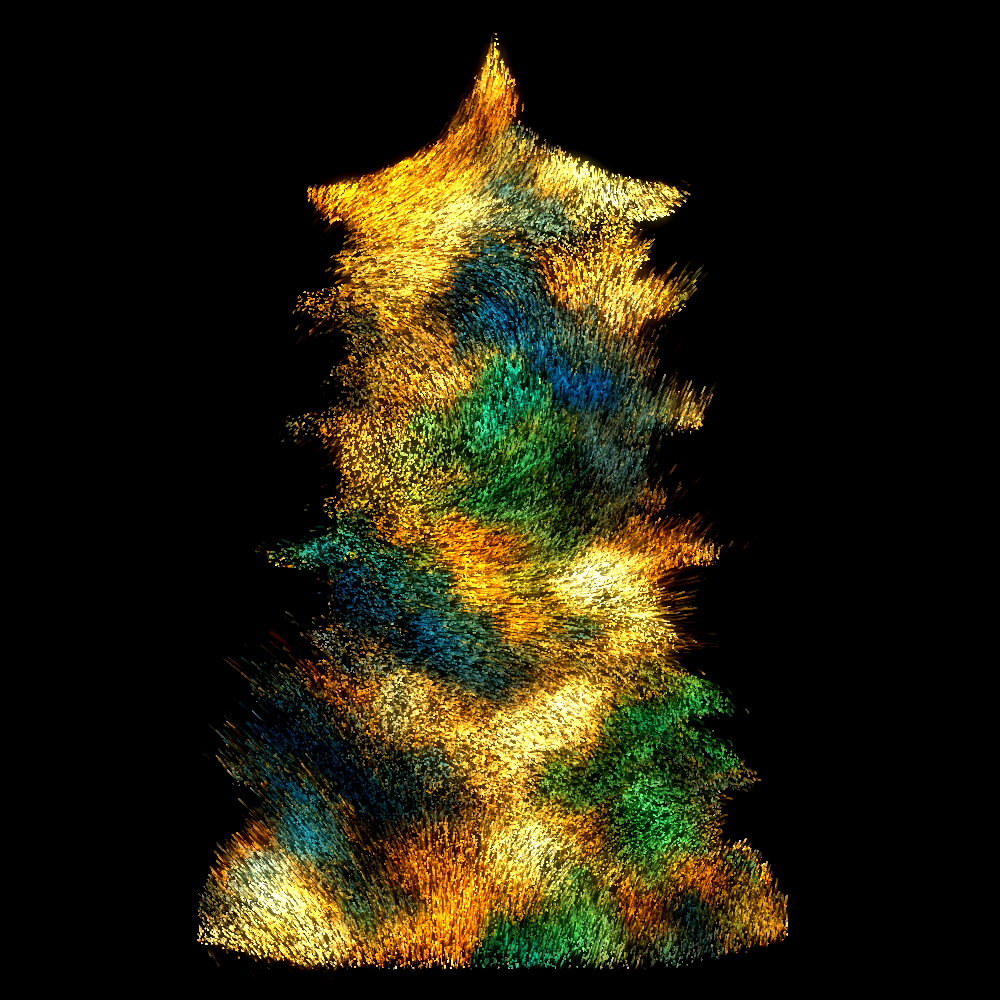

SELECTED WORK / ART & INTERACTION
IDEAS INTO
EXPERIENCE.
Digital artwork, interactive objects, game environments and interfaces.
01 / DIGITAL ART
Digital Roaming
数字漫游：塔影新生

Traditional architecture, reimagined.
The work explores the image of a traditional Chinese pagoda through particles, light and interaction. Its visual language connects architectural form with digital transformation.
The project brings together generative imagery, TouchDesigner visuals and projection, with tablet drawing and gesture interaction described in the project materials.
DIGITAL IMAGE / PARTICLES / PROJECTION
02 / INTERACTIVE SCULPTURE
From sound to warmth.
Role: creator & technical lead
Designed and made two human-shaped sculptures, integrating a heating system and sound sensors. Audience voices trigger a temperature change in the sculptures, connecting digital sensing with a physical response.
Watch project video ↗
03 / GAME ENVIRONMENT & EFFECTS
A world inspired by wuxia.
Role: environment & visual effects development
Contributed to a Chinese-style wuxia combat game, creating environments and combat effects. The workflow used Blender for low-poly modelling and Unreal Engine for materials, lighting and rendering.
Watch project video ↗
04 / REAL-TIME INTERACTION
TouchDesigner experiments.
Role: independent creator
A series of interactive installations using projection mapping, Kinect depth sensing and other sensors. Audience movement drives changes in real-time imagery, exploring feedback between people and exhibition spaces.
05 / INTERFACE DESIGN
An app, from screen to flow.
Role: UI designer
Independently designed a complete app interface and produced high-fidelity prototypes, with attention to user experience and visual logic.
Back to About ↗